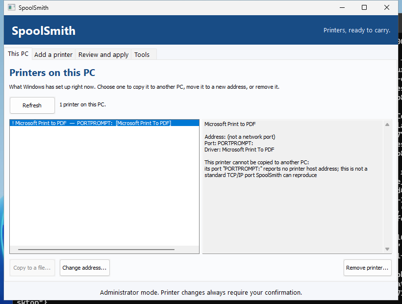
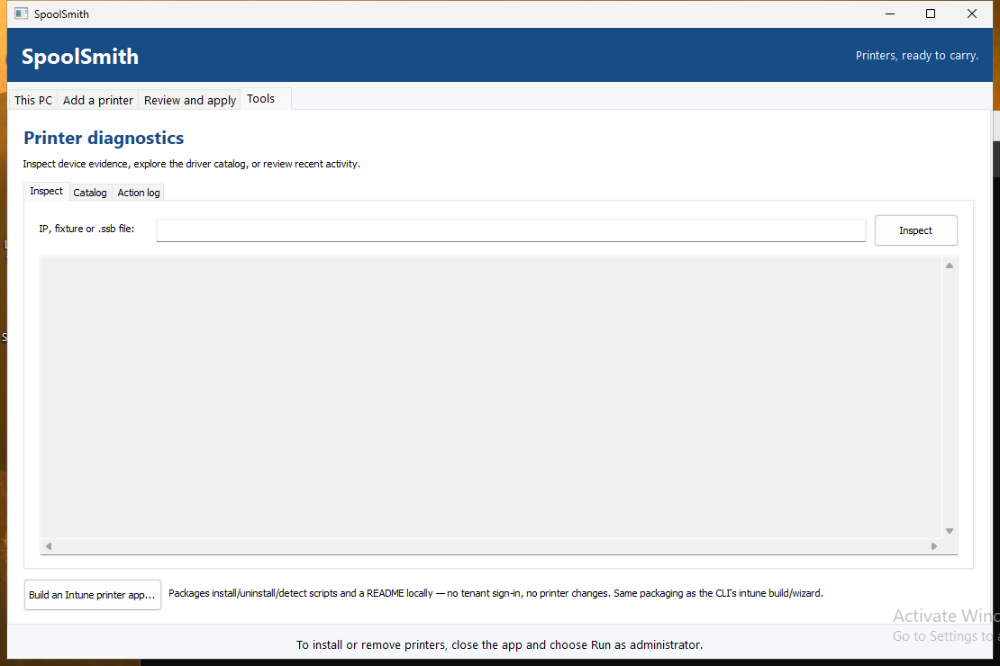

Reference
The desktop app
spoolsmith-gui.exe is built around one job: take printers off this PC, and put them on the next one. The sidebar has two pages for that, This PC and Add a printer. Everything else is under More.
This PC#
The app opens here, on a table of Windows' installed printers. Printers SpoolSmith can't copy, such as Print to PDF, are greyed with their reason.
- Select printers (Ctrl+A for all) and choose Copy 1 printer... or Copy N printers... One printer saves a
.ssb; several save one.zipset. - Or press Ctrl+C to put the printer files on the clipboard and paste them into a folder, share or chat.
- With one printer selected, Change address... and Remove printer... appear.
Include the driver where possible is on by default. Without administrator rights, or if the export fails, the copy is saved with settings only and the result says why. See Copy a printer.

Opening a printer file#
Double-click a .ssb to install it. The first time you run the app, it offers to open .ssb files for your Windows account; you can turn that off under More. You can also:
- drop printer files or sets onto the window, or paste them with Ctrl+V after copying them in Explorer;
- run
spoolsmith-gui.exe printer.ssb; - use Add a printer → Open a printer file...
A second double-click while SpoolSmith is open goes to the window that's already open. A .zip set opens a list of its printers, and you review each one on its own.
The apply sheet#
Every change to Windows opens the apply sheet, whether it's a printer file, a printer found on the network, a saved setup, or Remove or Change address on This PC. It shows:
- the printer's name, address and driver, and whether the driver is included;
- where the file came from: the source PC and when it was copied;
- anything to know first, such as settings only or a printer that isn't answering;
- the steps it will take, prepared as soon as the sheet opens.

Details shows the full plan. More options holds offline setup, updating an existing queue and, for removals, removing the driver. The main button asks for the single confirmation. If SpoolSmith isn't elevated, it reads Install as administrator... with the Windows shield: Windows asks for permission, SpoolSmith reopens elevated on the same printer, prepares the plan again and asks you to confirm there.
When it's done, each step shows its result. Copy notes for the ticket puts a plain-text summary on the clipboard. If a step fails, the sheet says earlier steps may already have been applied, and that adding the same printer again reuses what exists.
Add a printer#
This page lists printers on the connected network, scanned when the app starts. Scan a different network or IP... takes another subnet, or one address with Use IP directly. Pick a printer, then either choose Windows automatic (IPP) or a compatible installed driver (Refresh drivers reloads the list), and choose Save and review. See Set up by address.
Open a printer file... and Open a saved setup... are at the bottom of the page.
More#
The More menu at the foot of the sidebar holds:
- Saved setups: your library of
.ssbfiles. Set up, update, check status, edit (with a backup) or remove, plus Export all... and Import all... as a.zipset. See Move your whole library. - Inspect: what a printer reports about itself, or what a
.ssbor set contains. Nothing is installed. - Intune package: build a local Win32 app from a printer file. See Intune packaging.
- Action log: recent activity.

Keyboard and window#
Tab and Shift+Tab move through every control on every page. Ctrl+A, Ctrl+C and Ctrl+V work on This PC and for pasting printer files. The window opens at 1060×720 and can shrink to 960×640.
Where the app and the CLI differ#
They run the same workflow, so plans and checks are identical. The differences are deliberate:
- Elevation. The desktop asks Windows for permission and reopens elevated. The CLI stops and asks you to use an administrator prompt.
- Confirmation. The desktop always asks. Flags for unattended runs (
--yes,--plan-hash,--non-interactive) exist only on the CLI. - Deprecated catalog commands (
install <ip>,--force-family,catalog) exist only on the CLI.
The full side-by-side mapping is in the desktop/CLI parity table.
Something wrong or unclear? Open an issue or edit this page.